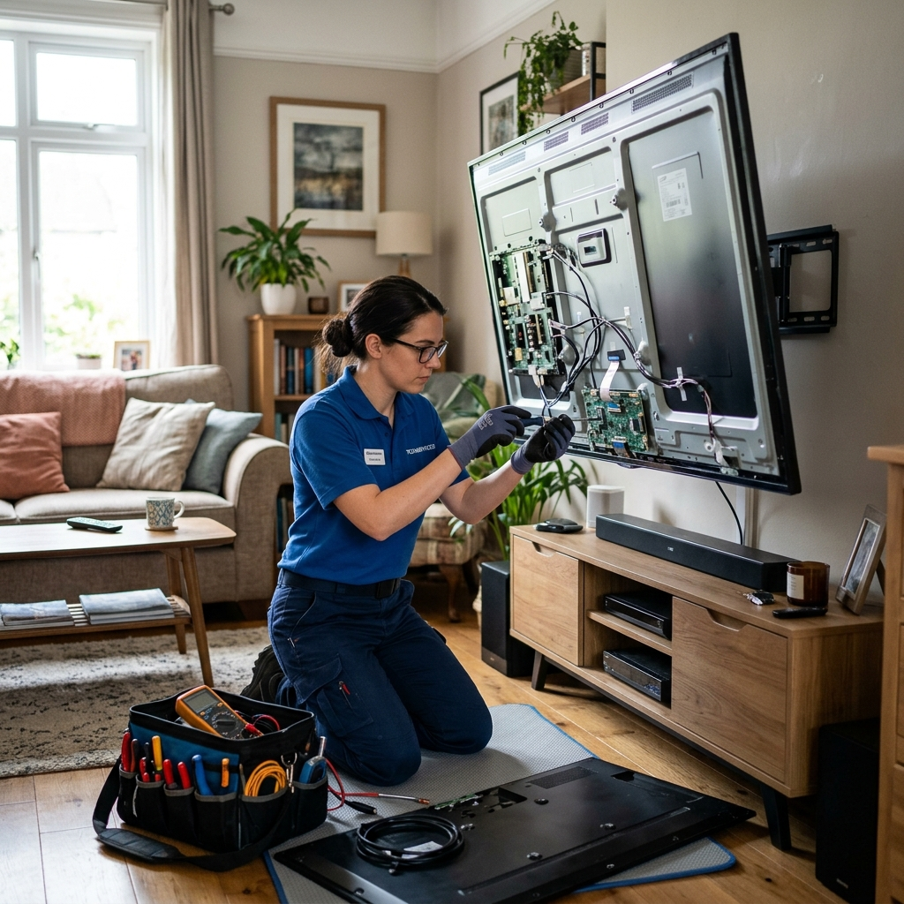

Spec sheets compare brightness and refresh rates. But after five years of ownership, the question that matters is simpler: what breaks, and how painful is the repair bill? We've bench-diagnosed hundreds of both technologies — here's our failure data, translated into plain English.
The Contenders, Briefly
OLED uses self-emissive pixels — each organic diode produces its own light. Perfect blacks, infinite contrast, no backlight at all.
QLED is refined LCD: a quantum-dot layer supercharges a conventional LED backlight array. Brighter, cheaper, and structurally more traditional.
What Actually Fails: OLED
From our workshop records, OLED failures break down as:
- Mainboard & power boards (55% of faults) — capacitors, HDMI retimers and standby circuits. Repair cost: $89–$149. Excellent repair prognosis.
- T-CON board (20%) — causes banding, double images or no picture with sound present. Repair cost: $79–$129.
- Burn-in / pixel degradation (15%) — static logos and HUDs leave ghost images. Not repairable; only preventable (see below).
- Genuine panel electronics failure (10%) — row-driver faults produce line defects. Panel replacement is uneconomical; diagnosis is free so you never pay to hear bad news.
What Actually Fails: QLED
- Backlight LED strips (45% of faults) — the classic dim-screen failure. Full OEM strip sets run $99–$159 fitted. The most common TV repair in our shop, period.
- Power supply boards (25%) — same story as OLED, $59–$109.
- T-CON and mainboards (20%) — $79–$149 depending on model tier.
- Panel defects (10%) — edge-lit clouding and dead zones from strip driver failures, usually fixable at strip level.
The headline: 80% of OLED faults and 90% of QLED faults are board-level repairs under $160. The "TVs are disposable" narrative mostly comes from shops that only know how to sell new ones.
Five-Year Reliability: Our Honest Read
| Metric | OLED | QLED |
|---|---|---|
| Fault rate by year 5 | ~7% | ~11% |
| Average repair cost (when faulty) | $105 | $95 |
| Most common failure | Boards | Backlight strips |
| Unrepairable failure types | Burn-in, panel rows | Rare (panel cracks) |
| Survives power surges | Poorly | Poorly |
OLED's edge comes from having no backlight to die. QLED counters with cheaper repairs when things do fail. Both share one weakness: surge-sensitive electronics. Which brings us to…
The $40 Accessory That Prevents Most Repairs
A significant share of board failures we see trace back to voltage spikes — storms, grid switching, or cheap power strips. A quality surge protector (not a $5 power strip; a real joule-rated unit) is the highest-ROI purchase a TV owner can make. Pair it with these habits:
- Set brightness sensibly. Vivid mode at 100% accelerates OLED wear and QLED backlight aging. Standard or Cinema modes look better anyway.
- For OLED: enable pixel-refresh cycles, vary your content, and avoid static news tickers for hours daily.
- Ventilate. Wall-mounting flush with zero clearance cooks boards. Leave breathing room.
So Which Should You Buy?
If you watch movies in controlled light and keep sets for 8+ years: OLED's reliability edge and board-repair economics favour it. If you need maximum brightness for a sunny room, game hard, or upgrade every 4–5 years: QLED's lower entry price makes repair-vs-replace math irrelevant. Either way — buy the surge protector first.